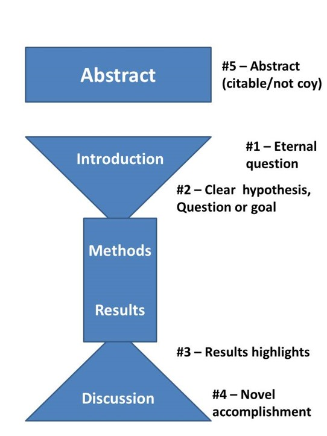
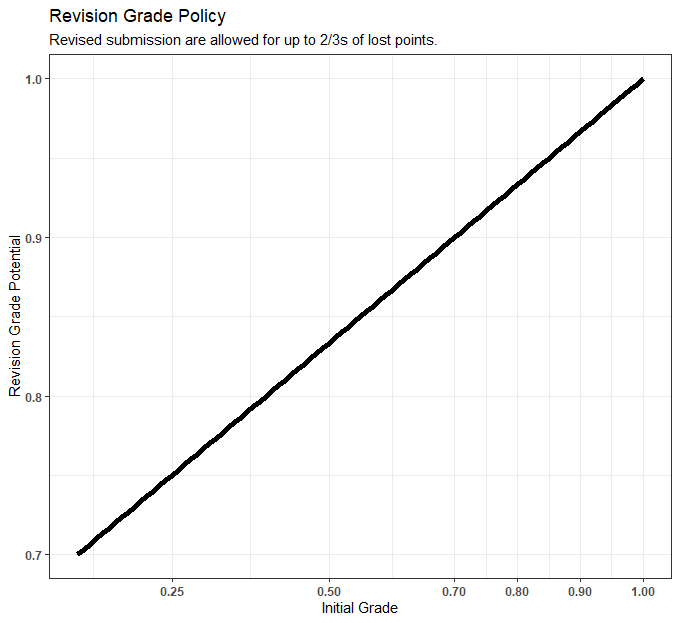

General Expectations for Scientific Writing
Throughout the course of the semester, we have general themes which will consistently arise in how we present our findings. For example, in every worksheet, we have a figure, a results statement, a mini-discussion, hypotheses, etc. All these elements will also arise in our lab reports and to an extent, our presentations.
All these elements are generally based on the core concepts of a scientific paper. Broadly speaking, scientific papers follow a funnel structure. The introduction takes big-scale ideas about the field of knowledge, identifies what missing knowledge there is (what are your core questions), then introduces the specific study and hypotheses. The methods and results are narrowly focused on the exact details of the study. Then the discussion takes those results, evaluates them in a narrow sense and then places them in the context of larger ideas / other studies.

Background / Introduction Statements
The background of your assignments should focus broadly, starting with general ecological ideas, then focus into the specifics of your investigation. Often times, this means introducing the broad theoretical or hypothetical underpinnings of your topic. Then you introduce the specifics of your study system and how it relates to those broad scale system. Then finally, you introduce the specific aims of the investigation (hypotheses, goals, questions).
To accomplish writing these sections, it is highly necessary to utilize primary literature and/or review papers to introduce the background. These should be written in a way that someone with a basic ecological background can learn and understand this study.
Hypotheses:
In a full paper, the main questions, hypotheses and predictions are listed in the Introduction portion (Typically in the last paragraph). For the project plans, worksheets, and grading, I’ve listed them separately. That is because of how critically important a good understanding of a hypothesis is.
Far too many people do not adequately distinguish between hypotheses, predictions, and theories. While this is in part a societal problem - people often refer to a hypothesis they have as a theory - we will not fall for it in this class. A hypothesis is a statement about how things work. It is a proposed explanation for an observed pattern. However, what makes a good hypothesis is that it is explicit in mentioning a mechanism which can be tests. Hypotheses should have a clear prediction which can be derived from them, that we then seek to test in our observations.
Figures:
As stated in the syllabus, you are welcome to create figures however you wish. I am teaching the course in R and encouraging you to give it a try. Regardless of how you created your figure, there are some elements which should be universal. I’ll discuss them in detail below. However, one thing that every figure should do is represent a summary of the data in some quick way. Really, the purpose of a figure is to show your results and key messages in an easy-to-digest way. If you were really excited about some scientific finding, you could put all the data into a google-sheet, share the link and send it out to the masses. However, who would actually engage with your data? Probably no-one unless they were extremely interested in whatever sub-discipline you were researching. Figures should be readily accessible ways to share information. People are extremely visual creatures. We are exceptionally good at recognizing patterns… even if they are not there. Think about how often you looked at a cloud and recognized some familiar entity.
Thus, make a good figure follows the classic saying: with great power comes great responsibility. We always want to present our data in a clear figure. But we also want to make sure that figure accurately reflects our data.
There are plenty of great resources out there about creative ways to summarize your data. One of my favorites is the r graph gallery.
Axes titles:
All axis on a figure should have a title. Only sometimes, does a categorical axis have enough detail in the labels to not warrant an axis title. Units, when needed, should be included as well. If there is a legend, you can include a title for it if necessary but sometimes it should be evident.
Figure Color:
Traditionally, figures simply relied on black, white, and grey due to the cost of printing color articles. Now that there are web-based publications primarily, color is increasingly common. However use color with caution. You don’t want it to look unprofessional. Additionally, keep in mind that many people are color blind, so it is important to make the figure accessible to all types of vision. Check out some great resources on color-blind friendly, palettes here.
Error bars & sources of variation
Because figures often have summary data shown, we want to make sure that our figure has some measure of variation shown. Many times we show the standard error, hence the term error bars. However, I prefer to show the more raw data with standard deviation shown. Either way, make sure when creating a figure, you evaluate what variation needs to be shown in the figure and you communicate what is shown in the figure caption. If this is not possible with the figure you’ve created, make sure you are confident in your figure choice.
Figure Captions
Every figure you submit should have a figure caption. We are striving to communicate in a way which is consistent with general conventions in science. You’ll notice as you read papers, very, very, very, very, very, very, very rarely would a figure ever have a title at the top. Rather figures have captions which provide a little more detail about the image above.
This is not to say that figure titles are completely obsolete. While academic articles often avoid titles, they are fairly common in popular writing. You might notice in a book you are reading or a news article, graphs typically come with a quick title. Like on this page, I used a title because it is a web-article. Note the key difference is that titles are generally going to be short, while figure captions contain a lot of detail.
A figure caption should follow the general format:
Figure 1. Statement describing the figure briefly. Important stats for the figure. Another important detail.
Captions should be terse and informative. Every figure should be “stand-alone”. This means that you should include enough detail where someone who hasn’t read the paper could glance at the figure and understand what is going on. This doesn’t mean you need to write an entire methods and results, but provide some context. If you are looking for a good example, just go to google scholar and search for some topic you are interested in. Take a look at how they format their figures in published, professional work. Also note figure captions go below the figure.
Making tables:
You can also provide a table to summarize data in a quick way. Tables are dangerous as people often want to fill them with content which is unnecessary. That said, a well-made table can really improve a manuscript. When making your tables, a key difference is by convention, table captions go ontop, while figure captions go on the bottom. They are also counted separately, (Figure 1)…(Figure 2)…(Table 1)…(Figure 3), etc.
Some Figure Don’ts:
Do not include a title unless appropriate
Do not start your figure captions by stating “Figure 1 shows….” or “As seen in this figure….”.
Results Statements:
When writing your results, you are describing your data and key findings in words. Note you shouldn’t simply regurgitate all your information in a lengthy list. You want to present the data in a narrative form. The results should include references to your figures and statistics when appropriate. When reporting statistics, make sure to include not just the p-values, but also effect sizes as that is what we are typically interested. I will even accept reporting of confidence intervals rather than p-values.
However, a common pitfall many beginning scientific writers fall into is just stating their stats/ figures.
For example:
- Figure 1 shows a clear pattern between the observed groups. The first group was larger than the second. A t-test revealed a significant difference (p < 0.001).
That’s not very easy to read and does not clearly show that you, the writer, understand what you are saying. Think about it as describing what happened (past tense). For example:
- The first group’s average body weight (##kg) was significantly larger than the second group’s average body weight (##kg) (Figure 1, p < 0.001, t-test).
Note in this second case demonstrates a lot more information. We narrate the findings and put supporting details in parentheses. The results should narrate both significant (from a statistical test) results, and interesting trends. For example, if you plotted a regression, with a ton of variation around the linear model, you might say “While there was a significant relationship between x and y (Figure 1, linear model, p-value = 0.002, \(R^2\) = 0.24), there was extreme variation in the y variable at high values of x (Figure 1).”
Another commonly discussed theme when writing results is to “not interpret the results in the discussion.” This phrase, if you’ve heard it before, is suggesting that you shouldn’t evaluate the hypotheses in the results section. That means, don’t say “Clearly, the hypothesis was not supported” in the results, save that for the discussion.
Discussion Statement:
The discussion should evaluate results in context of your original hypotheses and other general ecological ideas. You should suggest alternative hypotheses to explain your data or unexpected trends. Note that this should always be in the context of your results.
For example, you should never just state “Human error counting may have skewed results”. Such a statement doesn’t add any information.
Instead, you might write “While there was a large difference between the two forested regions, there was also huge variation within the sub-plots. Such variation might be natural, however differences between student’s accuracy in counting may have contributed. Yet, Smith et al. (2021) observed similar levels of variation between closely-located soil sites. Thus, it is likely the variation is a real signal.” That text is all made-up but should convey a general idea as to how these things should be written.
In a full paper, the discussion should utilize prior research as well, citing relevant sources. For our worksheets, I am mainly expecting a discussion of the current research. Thus, citations are not necessary (for worksheets), just a thoughtful consideration of the sampling design, data, and alternative explanations.
General Writing Style:
When writing scientifically, we typically take a slightly different tack than when writing for other purposes. Scientific writing often utilizes the passive voice. This is where the direct object takes the focus of the sentence and the subject (the one doing the action) is less emphasized. For example:
“The samples were collected in a randomized grid format”
Rather than”
“We counted using a randomized grid format”
That said, many traditionalists will argue that you should never use the first person when writing scientifically. I completely disagree. There are appropriate times to use difference tenses, voices, and persons when writing scientifically. Generally, while methods are written passively, an active voice is useful when describing a subjective decision made by the researchers. For example:
“While samples were collected along quadrats placed systematically in intervals along a transect, we excluded plots which had clearly been altered by evil fire-monsters as they were outside the scope of this investigation. In such a case, the plot was omitted from the dataset.”
Finally, there are levels to writing well. And largely, it comes with practice and revision. I typically write things very poorly on my first pass, then have to self-revise for clarity. When you are writing however, I encourage you to think about how to write briefly, yet communicate all needed information. Also, while there are certain expectations in the rubric, you should not need to write them explicitly (all the time). For example:
“An alternative hypothesis would be that squirrels just a lazy losers.”
That type of sentence does not actually enhance the writing, it just shows you attempted to meet the requirement. Instead:
“While the squirrels observed in this study were largely resting, it may have been that this is a diel pattern. Notably, it was extremely hot outside. Possibly, squirrel activity varies throughout the day and this variation was not captured in our sampling design. To fully investigate the hypothesis, squirrels ought to be observed at multiple points throughout the day.”
Generalized Rubric for Common Elements:
| Category | Insufficient (<60) |
Major Revisions (60-75) |
Minor Revisions (75-85) |
Meets Expectations (85-90) |
Exemplary (90+) |
|---|---|---|---|---|---|
Introduction/ Background |
Background is missing literature or not appropriately cited. Content is confusing and does not follow a logical progression. Writing displays a lack of direction or understanding. | Background is present but cited studies are not relevant. Some information may be slightly inaccurate or not well described. Detail is lacking overall. | The introduction is lacking in some small aspect. Literature may be present yet not well placed or in context. Funnel structure is wobbly. Hypotheses do not clearly come from background. | The introduction utilizes 3+ published studies to have background. Major ecological concepts are briefly discussed then transitioned to study specifics. Some inconsistencies may be present. | The introduction incorporates a comprehensive review of major hypotheses utilizing literature to establish state of knowledge on topic. Introduces study system and narrowly focuses into hypotheses |
| Hypotheses | Several potential issues: Only predictions are listed, hypotheses are incoherent, Writing is unclear to the point of complete confusion |
Hypotheses may be present but predictions are lacking or unclear. Hypotheses are clearly untestable. other major issues with study ideas. | Hypotheses and predictions are listed, although they may be lacking a small component. There may be some mismatch between hypotheses & predictions | Hypotheses are clearly stated with predictions. Predictions are testable and match study design | Hypotheses are clearly stated and logical extensions from background. Hypotheses have direct predictions which can be logically derived from them into a testable study. |
| Methods | Methods are not well thought-out and clearly do not relate to hypotheses or context of study. | Methods describe collection and analyses but have a fundamental flaw which compromises the study design. Or massively unclear how data may be connected to the study. | Methods have data collection and analysis described. There may be some unclear sections. Study design may have some potential flaws with analyses. | Methods are described with data collection and analysis well described. Some detail may be missing about exactly why/how a procedure was/will be done. | The methods are well thought-out. Described data collection and analyses methods are consistent with a goal of directly testing the hypotheses. A clear, comprehensive understanding of data is displayed |
| Figures | Figures do not accurately show the data. There is a clear issue with how information is presented. | Figures are missing major elements. Or figure does not have an appropriate use of showing data. Confusing or unrelated to the project | Data are well summarized however some minor element may be missing. Figures are still coherent | Data are well summarized, all captions, axes titles, etc are present. Figures are able to be interpreted without context | Figures are clear, creative, and aesthetically thoughtful. Data are well summarized, all captions, axes titles, etc are present. |
| Results Statements | Results statement is incorrect in its description of data | Several potential issues may have occurred: Results do not utilize correct analyses Results do not correctly reference figures Results are not detailed enough in the description of data Results have too much or irrelevant detail which distracts from an overall message |
Results list key findings and statistics however, may be lacking in a complete description or missing minor elements. | Results correctly utilize statistics and figures. Statistics are reported using appropriate metrics and effect sizes. Statements are clear and correct. | Results are brief, yet informative. Statistics are correctly utilized and described well in statements. Results is an easy to follow narrative format and highlights key findings accurately. |
| Discussion Statements | results are incorrectly interpretted. Outside studies are not utilized or utilized incorrectly. Overall discussion is severely limited. | Hypotheses are evaluated, yet there is a major disconnect between results and discussion or lacking in key areas. | Discussion meets minimum requirements of hypothesis evaluation and connection to other studies. Yet is limited in the overall discussion of ideas. | Discussion evaluates results & original hypotheses. Makes some connections to other studies and other potential ideas. | The discussion is a comprehensive evaluation of the results from this study. Makes clear connections to other studies both the place results in context but also evaluate alternative trends/ideas. |
| General Quality | Demonstrates a lack of effort, or confusing at multiple points to the stage of difficult to understand. | Confusing in some sections. Writing is choppy or does not follow scientific standards | Writing is clear generally but in some sections lacking or inconsistent. | Writing is clear, may be constrained at points but consistently accurate throughout. | Writing is quality and scientific. It is natural to read, clear, and demonstrates a thorough understanding of ideas. |
Submitting Assignments for Revision:
Now that this is clearly available, I am going to increase the harshness with which I grade. However, I don’t want people getting caught up on assignments as we progress through the semester. Ultimately the goal of the worksheets and the project proposal is for you to learn how to go about thinking, working, and writing like a professional ecologist. Over the next several worksheets, I will grade with detailed comments and feedback, according to the general rubric above. However, I really encourage you to learn from these assignments, not just get penalized for not having done it.
So for the worksheets, I am going to allow you to submit revisions.
The project plan will also be eligible for revisions.
Revised submissions will be eligible to receive 66.66% of the lost points on regrading. For example, if you received a 38/50, you lost 12 points. If you fully addressed all concerns in your revision, you can get 8 points back. I settled on this exact percentage as it allows most people to improve your grades
A few things to note:
Assignment 1 was not graded to the new standards described here. Mainly the figure captions were absent and I did not grade for those. However, revised submissions will be expected to be completed according to details described above. Yet, I will allow assignment 1 to have 100% revision credit because it will require a higher-bar than the initial expectations.
Assignment 2 while technically not due until after this page was written, it was assigned before. So while I will grade it following these standards, assignment 2 is eligible for 100% revision credit as well.
All worksheet revisions are due by the end of fall break (10/19). Please send me an email if you submitted a revision you would like to have graded.
Revisions are only eligible for a singular submission. No multiple re-submits.
Project plan revisions will be more flexible depending on individual situations
